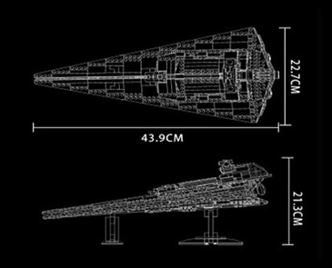

LEGO STAR WARS™ 1999-2019 |
||
Models |
Venator Destroir |
|
|
The Venator-class Star Destroyer makes its first theatrical appearance in Revenge of the Sith during the opening Battle of Coruscant. Within the Star Wars setting, these ships are regarded as the most powerful capital ships of the Republic Navy during the Clone Wars, serving double duty as battleships and starfighter carriers.[32] These massive ship require a relatively small crew to operate as a deliberate feature compensating for the fact that the Separatists can produce battle droids faster than the Republic can grow clone troopers.[30] As a true warship, the Venator-class can feed nearly its entire reactor output (which at maximum power consumes 40,000 tons of fuel per second) into its heavy turbolasers to devastating effect.[30] As a carrier, the Star Destroyer can rapidly deploy hundreds of starfighters, including ARC-170s, V-wings, Z-95 Headhunters and Jedi interceptors, from a .5 km (0.31 mi)-long dorsal flight deck. While strong deflector shielding is employed around the armored bow doors, they are slow to open or close, presenting a weakness in the vessel's design.[32][30][34]
During the Clone Wars these Star Destroyers, referred to also as Republic attack cruisers or Jedi cruisers, play an important role combating Separatist fleets and providing supporting fire for ground forces.[32] Thanks to their superior firepower, the Venator-class has a strong advantage against Separatist warships, and a small flotilla of attack cruisers can easily blast through the deflector shields of a Trade Federation Battleship.[30] At the Battle of Coruscant, over a thousand attack cruisers are deployed to defend the planet,[34] one of which (the Star Destroyer Guarlara) delivers a devastating barrage to the Invisible Hand at point-blank range.[30] |
||
|  | ||
Life is a game |
||